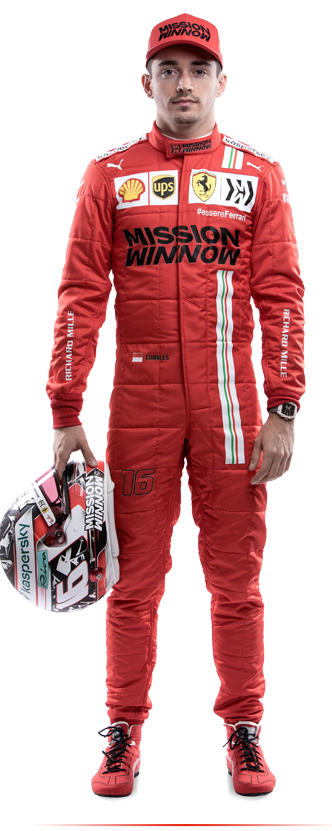
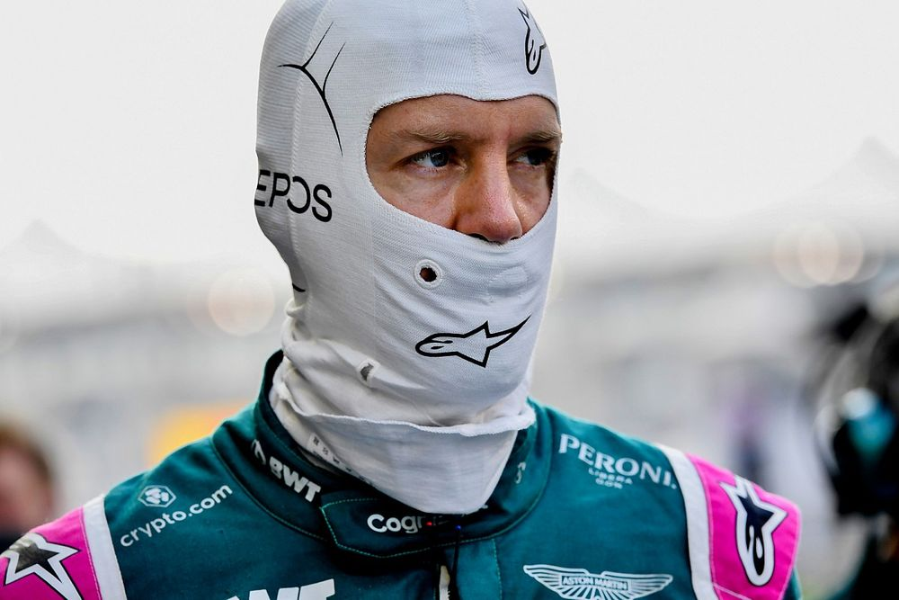
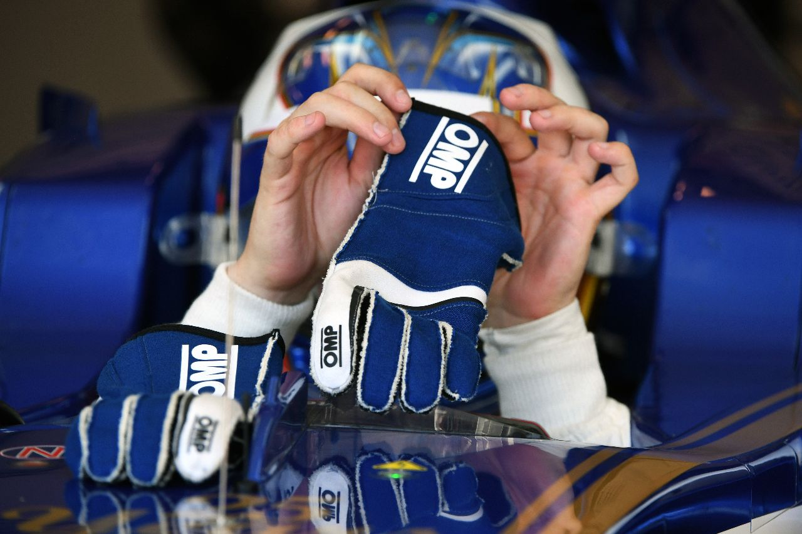
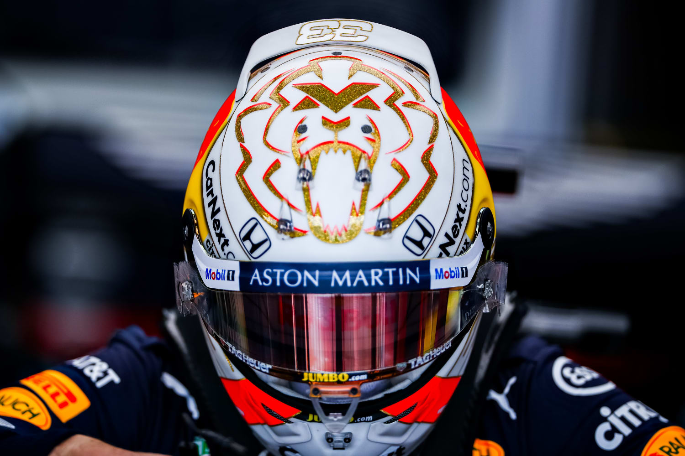

|
|
|---|
|
|
|---|
| |||
|---|---|---|---|
Las carreas de Fórmula 1, Fórmula 1, en tanto, es un término tradicional que implica que,
dentro de los autos de Fórmula, es el conjunto de reglas de más alto nivel tecnológico y mecánico.
A continuación se expondrá toda la información relativa a las carreras de Fórmula 1, desde el traje
que deben llevar los pilotos, los reglamentos establecidos que deben cumplir, hasta las carreras
más destacadas de la historia de la Fórmula 1.
|
| TRAJE PILOTO
en el que la posibilidad de que haya un accidente es alta. Los avances que ha habido con el paso de los años en la Fórmula 1, han configurado un mono ignifugo, cómodo, y transpirable. Desde mediados de los años 90, la ropa interior de los pilotos también debe ser ignífuga. De este modo, los pilotos tienen muy complicado tener quemaduras en un accidente. Su resistencia es debida a que está fabricado con un material llamado nomex,que está compuesto por unas fibras tratadas químicamente, que aguantan hasta 11 segundos bajo las llamas a una temperatura superior a 800ºC, sin sufrir ningún rasguño y sin superar los 41ºC de temperatura en su interior, tal y como se ha establecido por reglamento. Los 11 segundos es el tiempo que la FIA (Federación Internacional del Automóvil), considera que un piloto necesita para salir de su monoplaza en el caso de que haya un incendio.
|  | |
| Costura | Guantes | Casco
|
El traje, que incluye cierre y costuras, está hecho de un material
que lo protege contra el fuego. La mayor parte está diseñado con
tela Nomex, la cual puede aguantar por 11 segundos a 840 grados.
| 
El guante mide el pulso oximetral oxígeno en la sangre,
que no es un dato determinante pero tiene influencia positiva
en el momento de responder a esos accidentes extraordinarios y graves en F1; ya pasaron
las pruebas de seguridad de la FIA.
| 
El casco del piloto es obviamente una superficie aerodinámica, por lo que el diseño
tiene en cuenta esto con varios alerones dispuestos para evitar la elevación y canalizar
el aire de manera eficiente tanto alrededor de la tapa del motor como hacia el airbox
|  |
|---|
desde su creación, hasta la actualidad. Estas son las reglas básicas a las que se someten tanto los pilotos como todas las personas involucradas en esta competición:
|
| |||||||||||||||||||||||